Ejercicios interactivos del teorema del cateto
Resuelve los siguientes problemas:
1La hipotenusa de un triángulo rectángulo, a, mide 10 cm y la proyección de su cateto b sobre ella es de 6.4 cm.
¿Cuál es la medida del cateto b? cm
¿Cuánto mide el cateto c? cm
Aplicando el teorema del cateto se tiene:
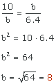
El cateto b miede 8 cm.
Aplicando el teorema de Pitágoras tenemos a2 = b2 + c2
102 = 82 + c2
100 = 64 + c2
36 = c2
c = 6 cm
2El cateto b de un triángulo rectángulo mide 5 cm y el cateto c, 12 cm.
¿Cuál es la medida de la hipotenusa, a, de este triángulo?
a = cm.
Indica la medida de las proyecciones de los catetos b y c respectivamente, redondeando a dos cifras decimales.
b = cm. c = cm.
¿Cuánto mide la altura de este triángulo?
h = cm.
Aplicando el teorema de Pitágoras se tiene que a2 = b2 + c2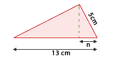
a2 = 122 + 52
a2 = 144 + 25
a2 = 169
a = 13 cm
Aplicamos el teorema del cateto para obtener la medida de las proyecciones de los mismos: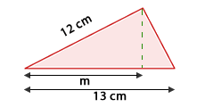
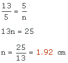
La proyección del cateto c mide 1.92 cm
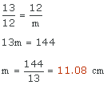
La proyección del cateto b mide 11.08 cm
Para calcular la altura basta aplicar el teorema de pitágoras a cualquiera de los dos triángulos que podemos apreciar en la figura
Tomamos, por ejemplo, el triángulo más pequeño:
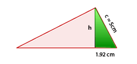c2 = n2 + h2
52 = 1.922 + h2
25 = 3.6864 + h2
h2 = 21.3136
h = 4.62 cm
3Las casas de cuatro amigos se encuentran situadas como muestra la siguiente figura. Sabiendo que la distancia de la casa de Belén a la de Carlos es de 1.5 Km y la distancia de la casa de Belén a la casa de David es de 0.54 Km, calcula las distancias que faltan:
De casa de Belén a casa de Ana Km.
De casa de David a casa de Carlos Km.
De casa de Ana a casa de David Km.
En primer lugar observemos que se trata de un triángulo rectángulo, por lo que podemos aplicar el teorema del cateto si fuera necesario.
 Distancia de casa de Belén a casa de Ana.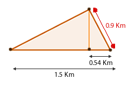
Distancia de casa de Belén a casa de Ana.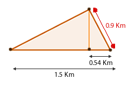
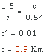
 Distancia de casa de David a casa de Carlos.
Distancia de casa de David a casa de Carlos.
1.5 − 0.54 = 0.96 Km.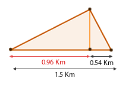
 Distancia de casa de Ana a casa de David.
Distancia de casa de Ana a casa de David.
Aplicamos el teorema de Pitágoras:
0.92 = 0.542 + h2
0.81 = 0.29162 + h2
h2 = 0.5184
h = 0.72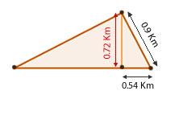
Si tienes dudas puedes consultar la teoría